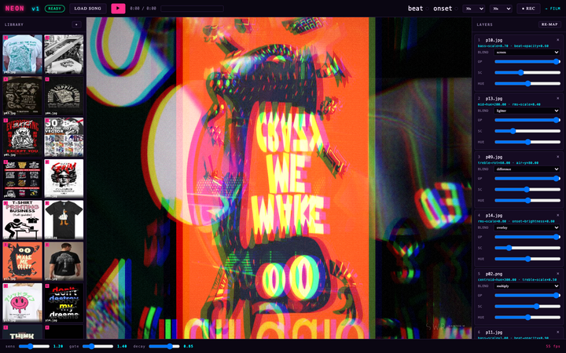
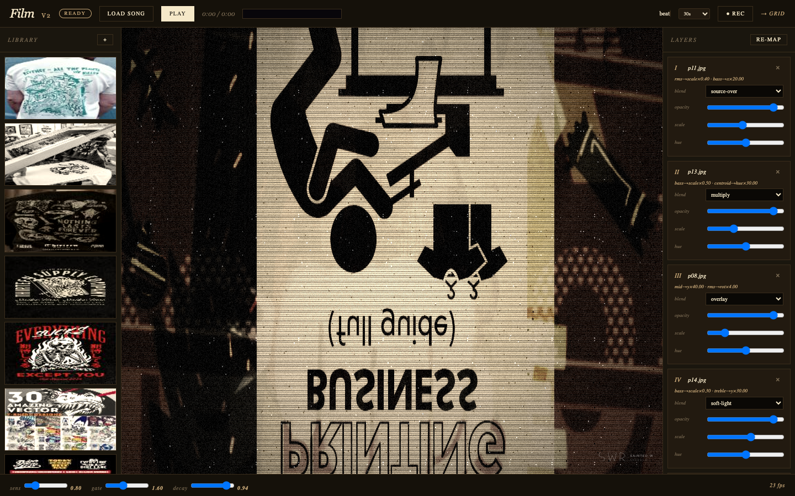
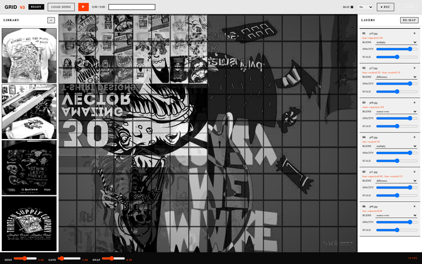
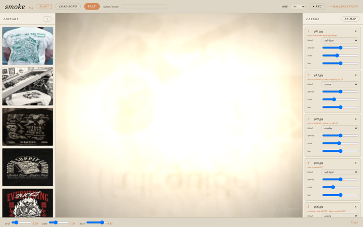
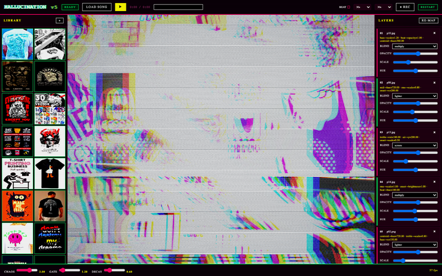

Adaptive beat detection
Bass-energy tracker with an adaptive threshold. Locks the BPM, fires an envelope on every kick, decays gracefully. Works on techno, jazz, and an ill-advised spoken-word record.
A browser-based engine. Drop in any song, drop in a library of clips
and images, hit RE-MAP until you like the composition,
then ● REC. A real MP4 comes out — no backend, no API
keys, no install.
Most visualizers just react to the spectrum. The Sainted Word engine classifies every asset you give it — motion, brightness, hue — and routes each one to the band of the song that suits it. The composition is algorithmic. The score is the audio.
Bass-energy tracker with an adaptive threshold. Locks the BPM, fires an envelope on every kick, decays gracefully. Works on techno, jazz, and an ill-advised spoken-word record.
Six layers, each with its own blend mode and a stack of reactors. Scale to bass. Hue to mids. Position to the spectrum's edge. Every parameter is a feature binding, not a keyframe.
Drop a folder of videos, GIFs, or images. Each one is auto-classified by motion, luma, and mean hue, then routed to the role that suits it. Different song, different look — same library.
The canvas is captured via MediaRecorder at 30 fps with
H.264 + AAC, 8 Mbps. No ffmpeg.wasm, no server, no transcode. The
file you download plays in any editor.
The auto-mapper picks from the top candidates weighted by score, and
shuffles the blend order. Each RE-MAP click yields a new
composition. Hit it until something sticks, then record.
The whole engine is one HTML file. Drop it in a folder, open it in Chrome or Safari, it runs. No node_modules needed for the user. The Vite project is just for development.
Five single-file variants of the same engine, each with a distinct aesthetic. Click one to open it in a new tab. Same controls, same library, same MP4 export.

Hot club, screen-blend stacks, sharpened easings, scanlines. Cuts on the beat, not after it.

Handheld warm tone, per-pixel grain, soft vignette, slow drift. Smooth easings throughout.

2×2 + half-cell composition, snap to the beat. Binary easings — no in-between, only on or off.

Everything at 0.5 opacity, slow drift, blurry and slow. The song moves through fog.

Every reactor maxed. RGB channel shift, lighter and difference blends, noise canvas overlay.
All five versions on a single page with thumbnails, descriptions, and direct links.
Or skip the install entirely — the engine is a single HTML file and runs from a static server.
The dev server uses Vite for hot reload during development. The production build outputs to dist/ with the engine, the 5 versions, and the library.
library/ are 75 MB totalNo native dependencies, no build step required to use the engine. Just a browser and your library.